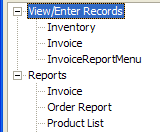

Home Page
Overview
The Home Page action assists you in building a startup form that can be used as a main menu for your application..
Procedure
Click either Edit Choices using Home Page Genie or Edit Choices using Menu Builder .
When you return to the action script genie, the screen will show your selections in a tree control, something like this:

Click Next >.
Optionally, click Header Text, Footer Text, Left Panel Text, or Right Panel Text to add static text to the top, bottom, left, or right sides of the dialog box. All of these buttons take you to the Static Text Genie .
Click Next >.
Optionally, modify the comment that describes the action.
Click Finish.
See Also
Static Text Genie, Home Page Genie, How to Design a Custom Menu
Supported By
Alpha Five Version 6 and Above